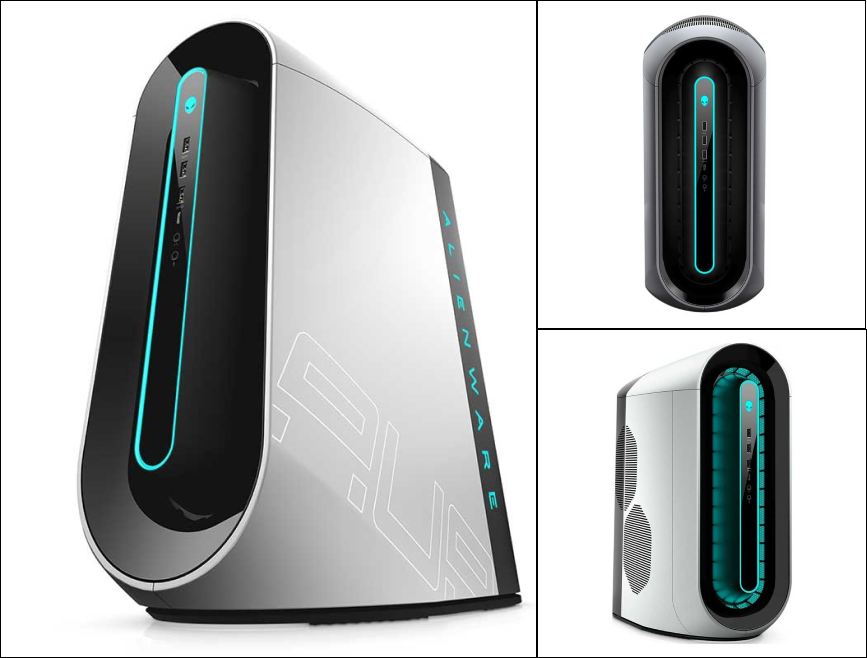

STAR PRODUCT
U.C.O Max ANBU III
$1.250 USD- AVAILABILITY: IN STOCK
- SKU: wdr14aur202soh
- CATEGORY: COMPUTER
Introducing our first Cryo-tech desktop based on the evolved industrial design of Legend 2.0 and powered by 12th generation Intel Core processors.